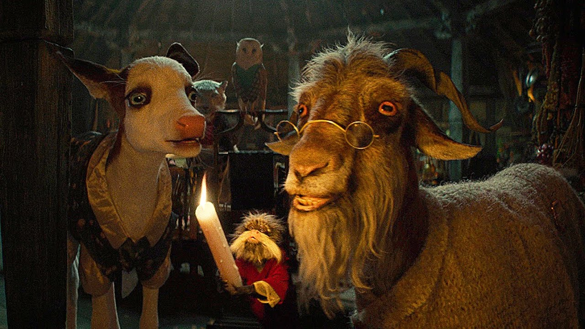

The Land of Oz has a large population of Animals and their rights have become a political issue. Apparently, the Wizard is opposed to them having rights like humans. He then proceeds to kidnap animals and having them forgetting how to speak. As time goes by, many animals start fleeing Oz into the unknown land beyond Oz. Elphaba becomes the great advocate for their rights, as she herself was raised by a bear and is well used to animals.